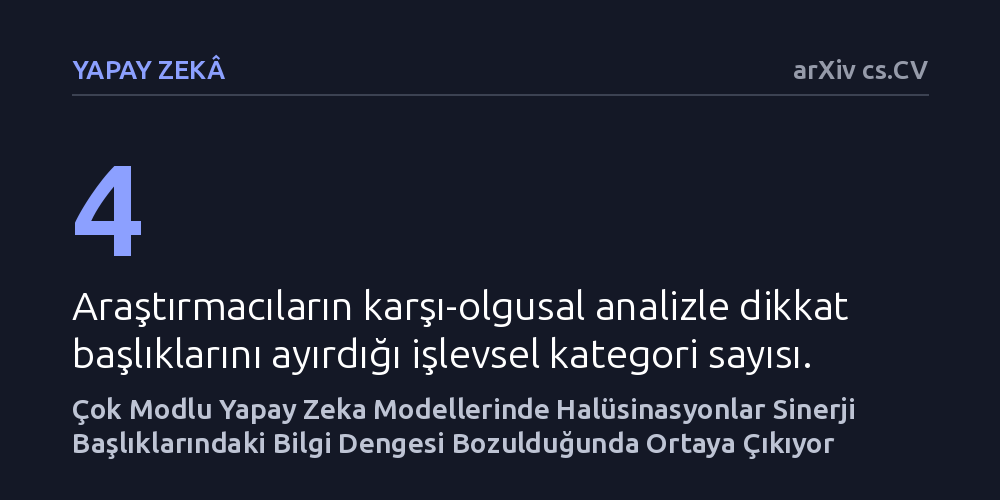

YAPAY-ZEKA · arXiv cs.CV · 2026-09-11
Araştırmacılar, çok modlu yapay zeka modellerindeki halüsinasyonların hangi dikkat başlıklarından kaynaklandığını saptamak ve gidermek amacıyla HEAL yöntemini geliştirdi. Yanılsamaların tekil kiplerden ziyade görsel ve metni kaynaştıran sinerji başlıklarındaki bilgi dengesinin bozulmasıyla ortaya çıktığı ve dinamik kalibrasyonla azaltılabildiği belirlendi.
Yapay zekadaki görsel uydurma sorununu çözmek için tüm modeli yeniden eğitmek yerine, sadece görsel ve metni kaynaştıran sinerji başlıklarındaki bilgi dengesini düzeltmenin yeterli olduğunu gösterir.

Çok modlu büyük dil modelleri, hem görüntüleri hem de metinleri aynı anda işleyerek sorulara yanıt verebilen gelişmiş yapay zeka sistemleridir. Ancak bu modellerin günlük hayatta ve kritik görevlerde güvenle kullanılmasını zorlaştıran en büyük sorunlardan biri 'halüsinasyon', yani modelin görselde gerçekte var olmayan nesneleri, renkleri veya ilişkileri varmış gibi uydurmasıdır. Bir fotoğrafta bulunmayan bir nesneyi varmış gibi raporlamak, medikal analizden otonom sürüşe kadar pek çok alanda ciddi riskler doğurmaktadır.
Mevcut çözüm yaklaşımları çoğunlukla modelin dikkat ağırlıkları gibi dolaylı göstergelerini takip etmeye çalışmaktadır. Ne var ki araştırmacılar, yalnızca dikkat katsayılarına odaklanmanın halüsinasyonun arkasında yatan gerçek bilgi kaymasını açıklamakta ve gidermekte yetersiz kaldığını vurgulamaktadır. Yanılsamayı kökten çözebilmek için yapay zekanın iç mimarisinde görsel ve dilsel bilginin hangi noktalarda birbirine karıştığını veya dengesini yitirdiğini doğrudan tespit etmek gerekmektedir.
Araştırmacılar bu sorunu çözmek amacıyla HEAL (Başlık Düzeyinde Bilgi Ayrıştırma ve Kalibrasyon) adını verdikleri bir yöntem geliştirdi. İlk adımda, çok başlı dikkat katmanlarının çıktılarına nedensel gürültü müdahalesi uygulandı. Bu sayede modelin karar sürecinde belirleyici bir nedensel katkısı olmayan fazlalık ve gereksiz başlıklar elenerek doğrudan asıl bilgi akışını taşıyan kritik başlıklar izole edildi.
Ayıklanan başlıklar daha sonra istatistikte sıkça başvurulan 'karşı-olgusal Farkların Farkı' mantığıyla incelendi. Bu analiz sayesinde her bir dikkat başlığının bilgiyi nasıl dağıttığı netleştirildi ve başlıklar işlevlerine göre dört ayrı tipe kategorize edildi. Böylece hangi başlıkların yalnızca metne, hangilerinin yalnızca görsele ve hangilerinin her iki modaliteyi birlikte işleyen sinerji başlıklarına karşılık geldiği açıkça ortaya kondu.
Yapılan analizler sonucunda kritik bir bulgu elde edildi: Halüsinasyonlar, sanılanın aksine sadece görsele ya da sadece metne odaklanan başlıkların sayısı veya gücüyle güçlü bir ilişki göstermiyordu. Yanılsamalar, asıl olarak hem görüntüyü hem de dili bir arada işleyen 'sinerji başlıkları' içerisindeki bilgi dağılımı sağlıklı bir dengeden saptığında meydana geliyordu. Modelin uydurma yapması, bu ortak başlıkların görsel kanıt ile dilsel beklenti arasındaki dengeyi kaybetmesinden kaynaklanıyordu.
Bu tespitten hareketle araştırmacılar, sinerji başlıklarının değer vektörlerine dinamik bilgi kalibrasyon faktörleri enjekte etti. Geliştirilen mekanizma, görsel ve dilsel bağımlılıkları aktif olarak düzenleyerek modelin çıktı dağılımını metin ezberleri yerine görseldeki somut kanıtlara doğru yönlendirdi. Birden fazla çok modlu model üzerinde yürütülen deneyler, HEAL yönteminin modellerdeki halüsinasyonları etkili bir şekilde azalttığını gösterdi.
Bu çalışma, yapay zekadaki halüsinasyon problemini bastırmak için milyarlarca parametreyi körlemesine yeniden eğitmek ya da aşırı kısıtlayıcı filtreler koymak yerine, sorunun kaynağına cerrahi bir müdahale yapılabileceğini göstermektedir. Hangi dikkat başlıklarının dengesizlik ürettiğini bilmek, modellerin iç işleyişini hem daha yorumlanabilir kılmakta hem de güvenilirliği artırmada pratik ve hafif bir yol sunmaktadır.
Yine de yöntemin farklı model mimarilerinde, farklı veri kümelerinde ve karmaşık akıl yürütme görevlerinde ne kadar başarılı olacağının bağımsız araştırmacılar tarafından test edilmesi gerekmektedir. Eğer bu yaklaşım daha geniş deneylerle doğrulanırsa, görsel-dil modellerinin güvenilirliğini artırmada uygulanabilir bir standart haline gelebilir.